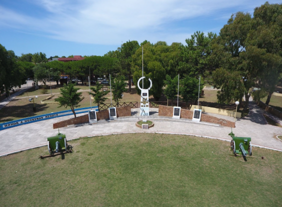
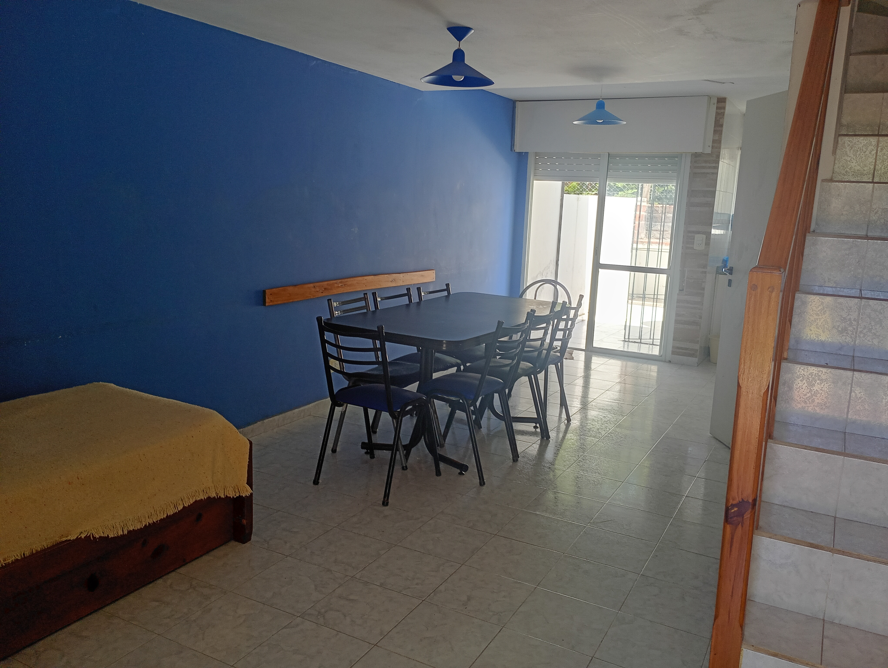
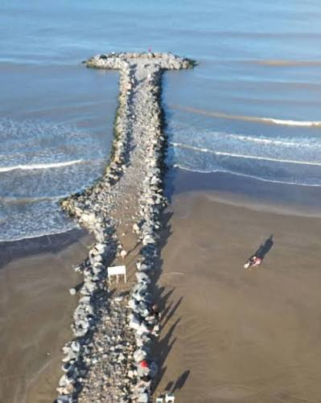
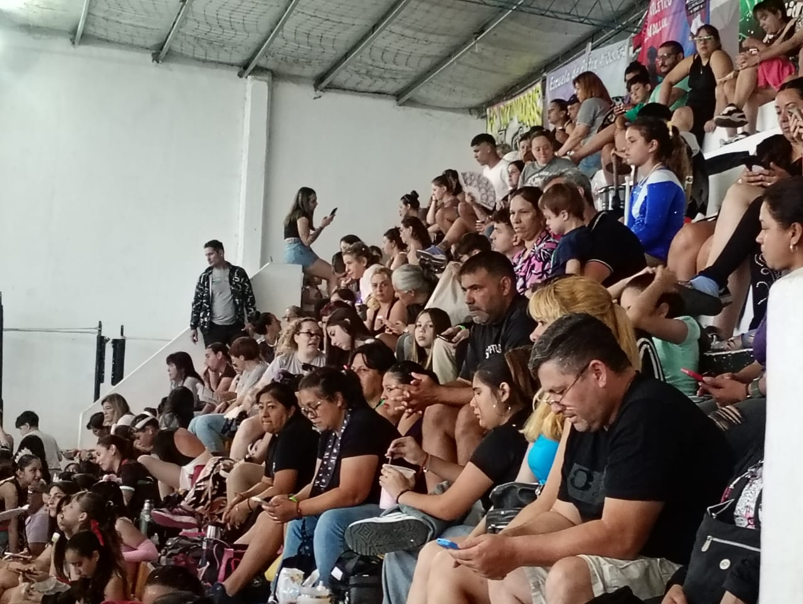
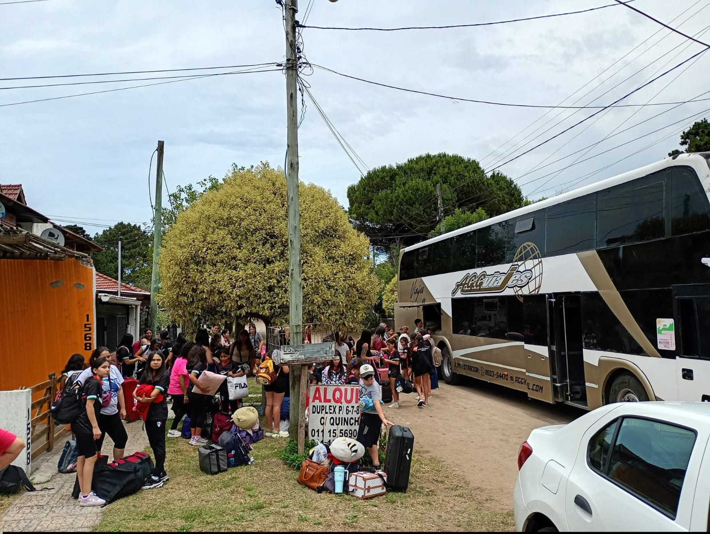
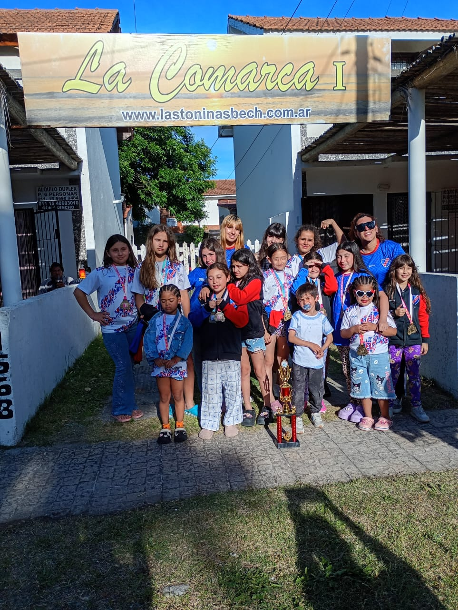
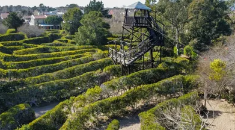

FOTOS Y UBICACIÓN EN GOOGLE MAPSCULTURA · AL AIRE LIBRE
Anfiteatro
Un espacio para encontrarse y disfrutar actividades de la comunidad. Consultá la agenda local durante tu visita.
UN LUGAR PARA BAJAR EL RITMO
Días de playa, sobremesas largas y ese descanso que estabas necesitando. Encontrá el espacio ideal para disfrutar Las Toninas a tu manera.

Unidades cómodas y equipadas para compartir la costa en familia o con amigos. Elegí la que mejor va con tu viaje.
Conocé los alojamientosDESCUBRÍ NUESTROS ESPACIOS
DESCANSO A TU MEDIDA
Explorá las opciones y elegí el espacio para tus próximos días junto al mar.
Probá con otros criterios o limpiá la búsqueda.

UN LUGAR PARA COMPARTIR · 02/04UN RESPIRO CERCA DEL MAR
Un patio al aire libre, una charla que se alarga, la playa a unas cuadras. Cada alojamiento tiene su propia forma de hacerte sentir de vacaciones.
Elegí cómo querés descansarVENÍ A COMPETIR, NOSOTROS TE ACOMPAÑAMOS
¿Viajás con tu equipo? Recibimos contingentes que participan en torneos de patín artístico. Consultanos por alojamiento y tarifas especiales para el grupo.



UN POCO MÁS PARA DISFRUTAR
Sumá paseos y momentos locales a tus días de playa.

FOTOS Y UBICACIÓN EN GOOGLE MAPSCULTURA · AL AIRE LIBRE
Un espacio para encontrarse y disfrutar actividades de la comunidad. Consultá la agenda local durante tu visita.
FIESTA · EN TEMPORADA
Música, color y celebración para compartir en familia. Las fechas y actividades pueden variar cada año: consultá la agenda local.

FOTOS Y UBICACIÓN EN GOOGLE MAPSPASEO · NATURALEZA
Un paseo distinto para sumar naturaleza y un rato de aventura a la escapada. Consultá horarios y disponibilidad antes de ir.
UN DESTINO PARA DISFRUTAR
Encontrá cada alojamiento y abrí su ubicación en Google Maps.